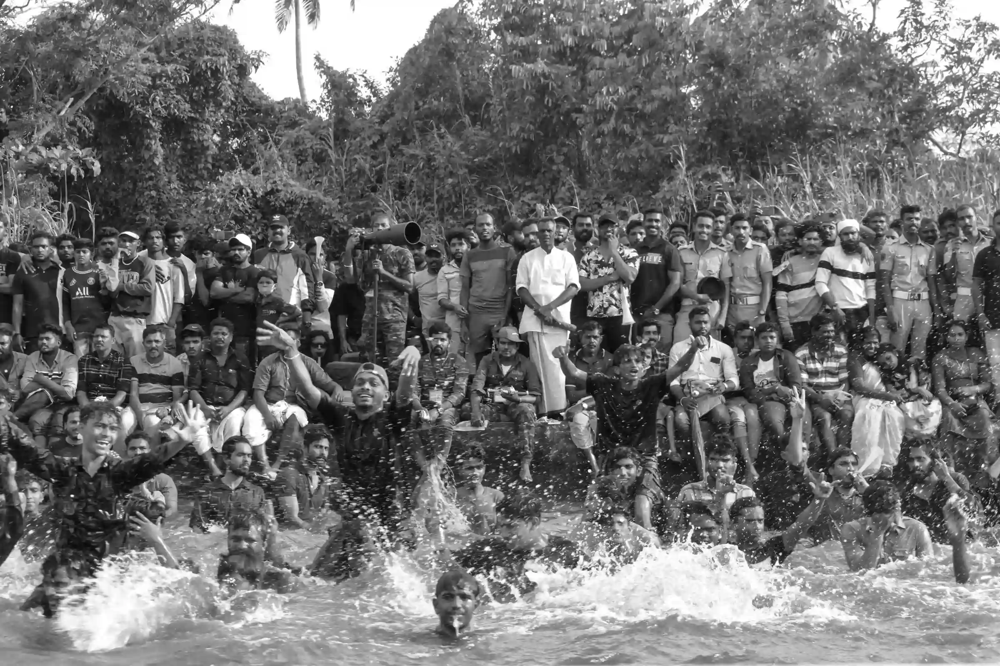
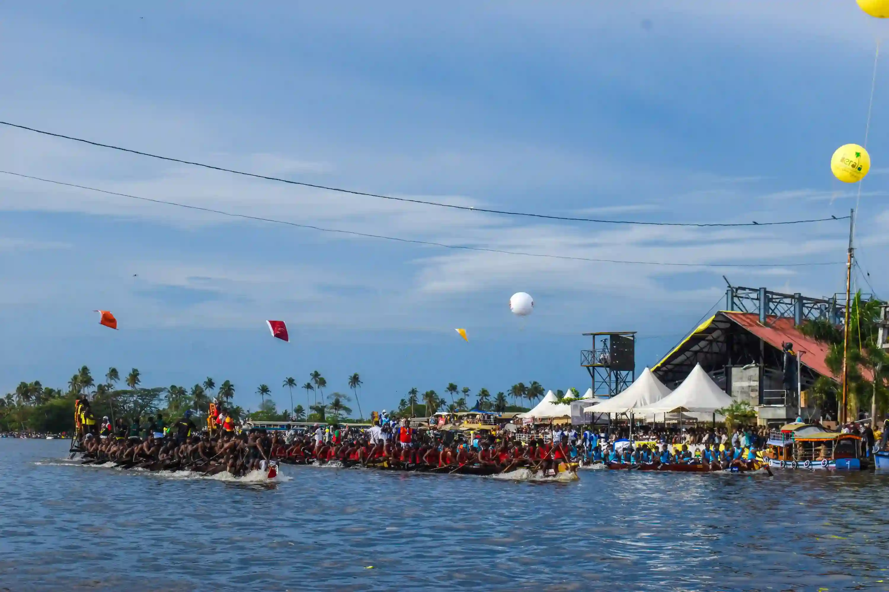
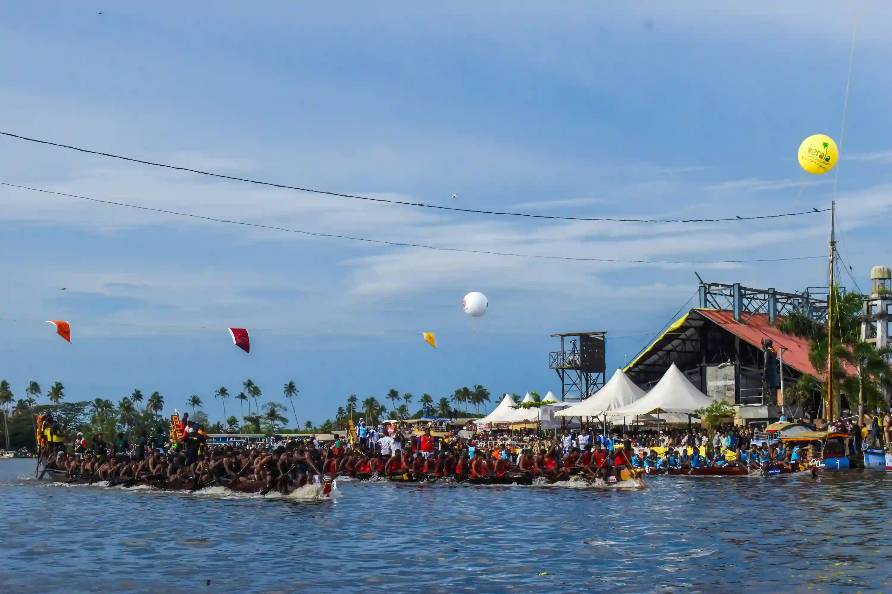
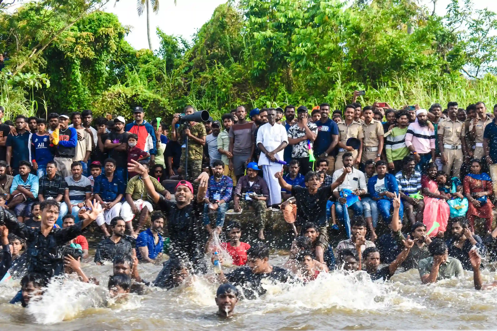
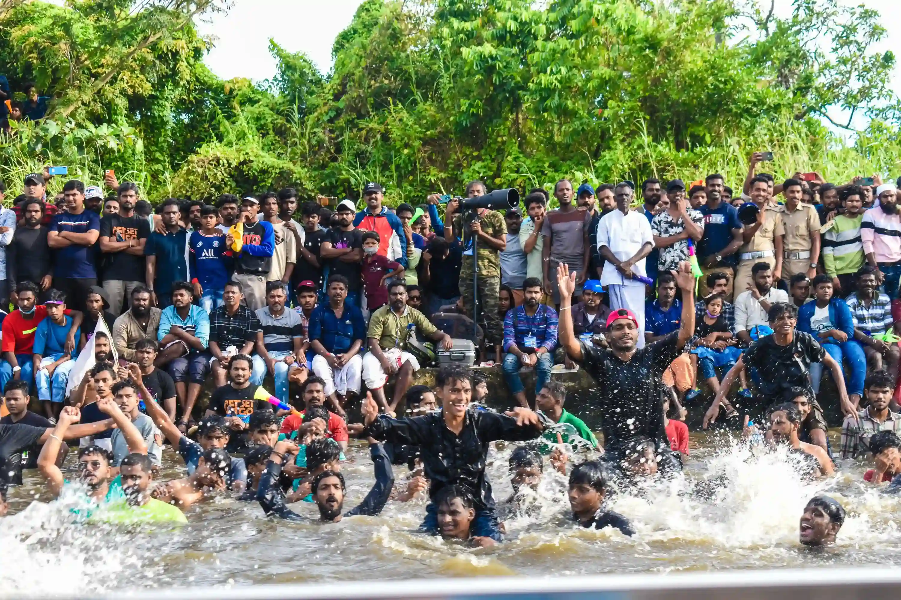
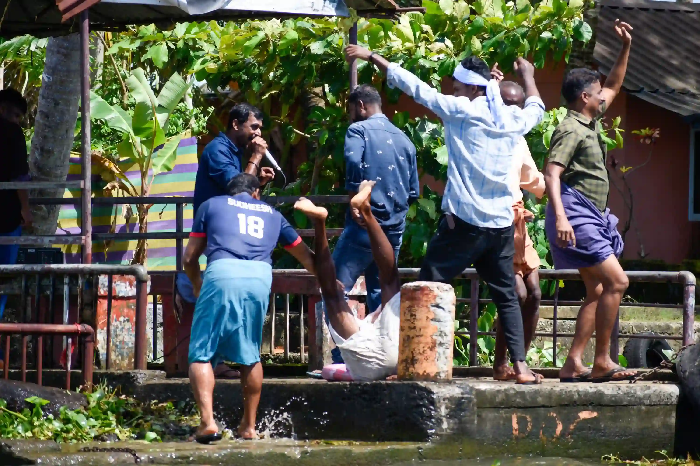
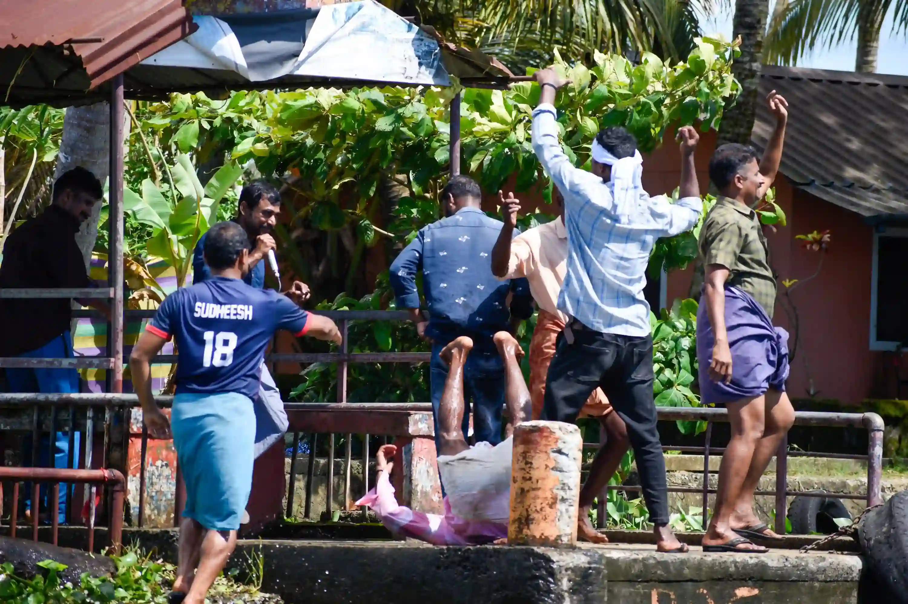
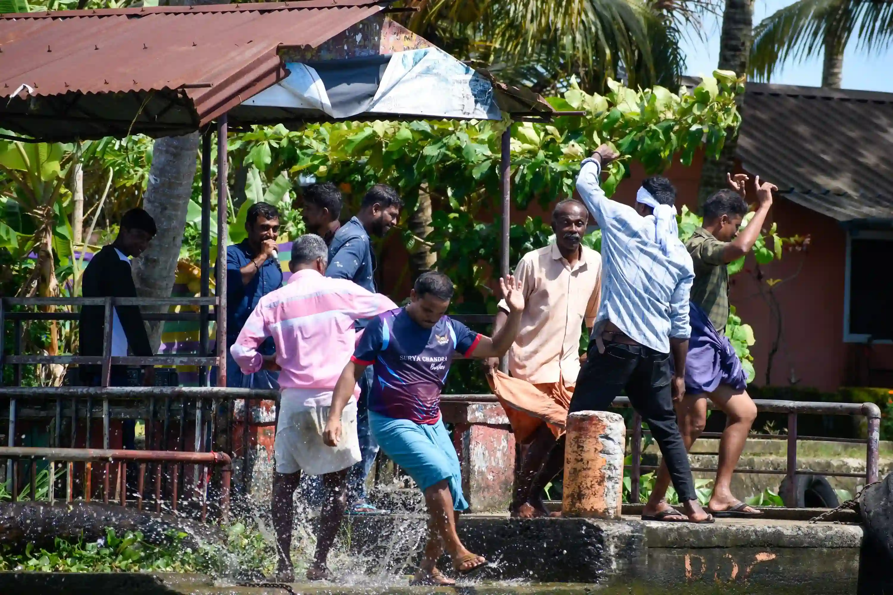
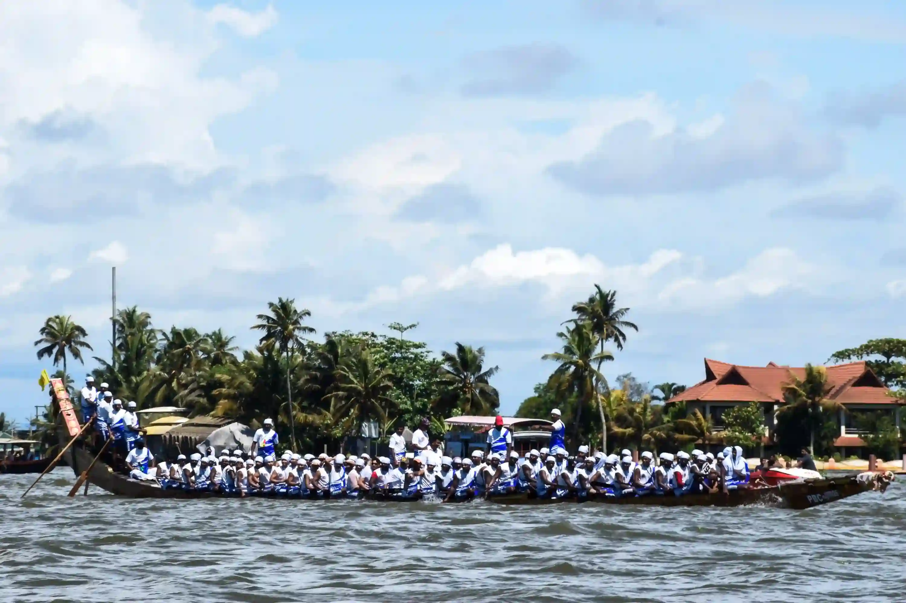

Celebration — The Ultimate Drug
Nehru Trophy Snake Boat Race & Backwater Energy
Every year during the monsoon, the backwaters of Kerala come alive with one of the state’s most celebrated traditions—the Vallam Kali, or traditional snake boat races. More than a sporting event, these races carry a deep sense of culture, community, pride, and identity. Teams train for years, driven not only by the hope of winning, but by the honour associated with representing their village.
Among the many races held across Kerala, the Nehru Trophy Boat Race at Punnamada Lake in Alappuzha is perhaps the most iconic. With thousands gathering along the backwaters, the competition brings an energy that extends far beyond the race itself. I had the privilege of witnessing the event not from the shore, but from a rented Shikara moving through the backwaters. By coincidence, our boat was at the right place at the right time, just as the race was nearing its end.
But what stayed with me was not only the race. It was the celebration surrounding it. For nearly three hours, everywhere we travelled, people were dancing, singing, cheering, and sounding air horns. The celebration seemed to spread across the entire backwater, and even from kilometres away, the energy of the gathering could be felt.
"This series is my attempt to capture that energy—the moment when celebration becomes almost intoxicating, when an entire community seems to move with the same rhythm."

My first international photographic presence — Punnamada Lake, Alappuzha.







